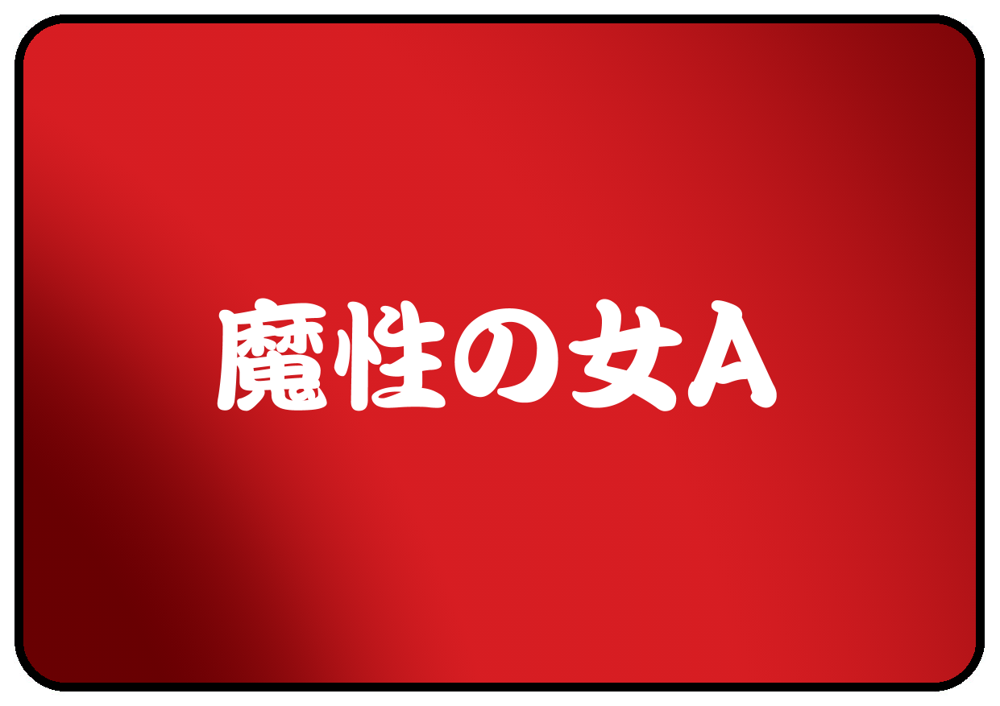
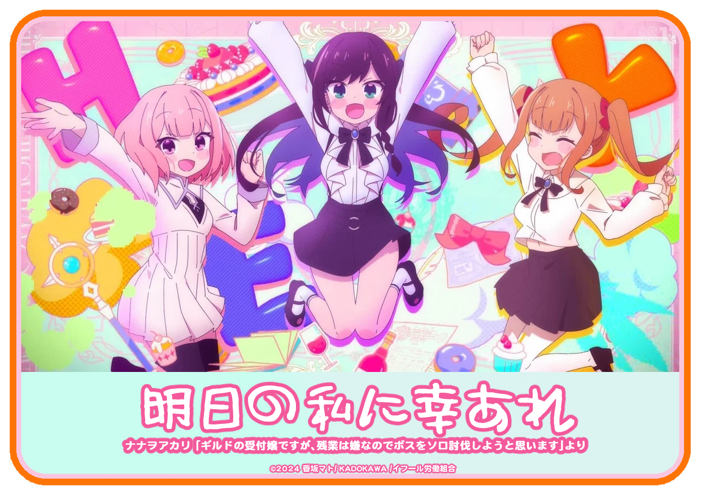
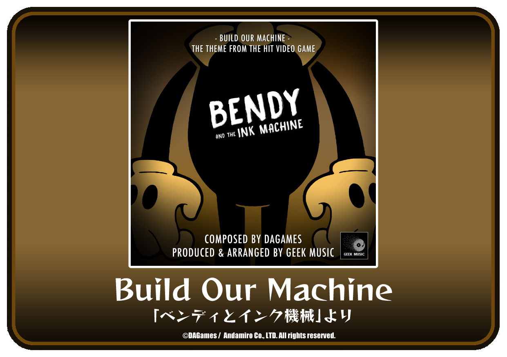
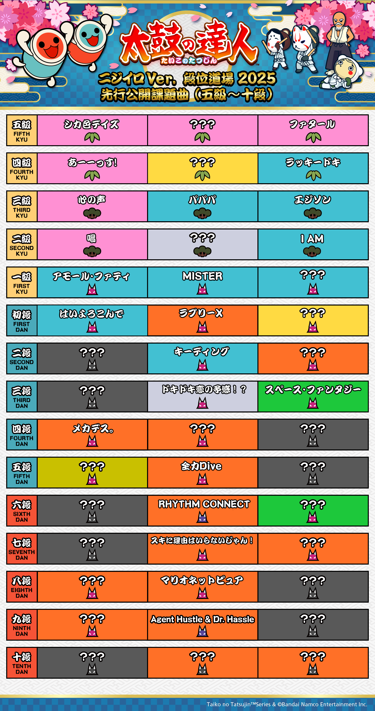

2025年07月03日
カテゴリー : 太鼓の達人
2025/7/31（木) 太鼓の達人 ニジイロ プラス Ver. アップデートのお知らせ（「アークナイツ -明日方舟-」楽曲収録決定！！ ＆ ガンダム45周年×初音ミク×太鼓の達人コラボ開催決定！！）
みなさん、こんにちは！
お知らせ担当の１１号です。
ひさしぶりに綱引きに参加しました！
その時は良い汗かいたわ～…という感じだったのですが、、、
一晩明けたら、左二の腕に新たな暗黒の力が刻まれていました！！
氷冷鎮癒の護符が効いているうちに、お知らせスタート◎

アップデート日から遊べる新曲はコチラ！！
▼ ポップス ▼
魔性の女A
▼ アニメ ▼
明日の私に幸あれ ／ ナナヲアカリ 「ギルドの受付嬢ですが、残業は嫌なのでボスをソロ討伐しようと思います」より
▼ ゲームミュージック ▼
Build Our Machine ／ 「ベンディとインク機械」より
.



.
※ 日本版以外へは後日の楽曲収録を予定しています。
※ 一部の楽曲について、一部の国や地域のみで収録の場合があります。
2025年7月24日(水)より、アークナイツの楽曲が【日本】で同時収録が決定しました！！
▼ゲームミュージック▼
Radiant ／ 「アークナイツ -明日方舟-」より
Break Through the Dome ／ 「アークナイツ -明日方舟-」より
中国大陸版のアークナイツに太鼓の達人コンテンツが収録されることをうけての楽曲収録となりました！！
どんな譜面になるのかワクワクしながらお待ちください！！
※ 日本版以外へは後日の楽曲収録を予定しています。
.
ガンダムシリーズ45周年を記念して、現在開催中の「ガンダム45周年×初音ミク」スペシャルコラボに、太鼓の達人(ゲームセンター版)も参加することが決定しました～～！！！
2025年7月31日(木)より開催予定です！
.

.
「ガンダム45周年×初音ミク」スペシャルコラボ楽曲を収録します♪
.
▼ボーカロイド™曲▼
アイドル戦士(feat. 初音ミク) ／ Mitchie M
.
ぷちキャラの獲得やBandai Namco Passportの販売は日本のみです。
.
.
※ 日本版以外へは後日の楽曲収録を予定しています。
※ VOCALOID（ボーカロイド）はヤマハ株式会社の登録商標です。
.
また、Bandai Namco Passportを使って、アイドル戦士(feat. 初音ミク)をプレイすると、初音ミク(ガンダム45周年コラボ衣装)ぷちキャラをゲットすることができます！！
.
さらに・・・！！
.
.
コラボ記念デザインBandai Namco Passportの販売が決定しました～～～！！
ぷちキャラをあしらったデザインがとってもキュート♡
数量限定で全国のアミューズメント施設等にて、7月31日(木)より随時販売予定です！！
キャンペーン開始間近に改めてお知らせしますので、楽しみにお待ちください☆彡
.
↓↓↓「ガンダム45周年×初音ミク」スペシャルコラボの公式サイトはコチラ↓↓↓
https://www.gundam.info/feature/g45th-hatsunemiku-collab/
段位道場プラス2025の開始日が決定しましたー！（イエーイ！！）
2025年8月1日（金）より、【日本、ワールドワイド】で同時スタートします！！
段位の課題曲の事前公開最終情報を発表します！！

段位道場プラス2025の開始まであともう少し！
「？？？」の曲を予想しながら、先行公開の課題曲で腕慣らししておいてくださいね♪
引き続き、こまめな手の消毒、手洗い・うがいなどなどで、衛生を保ちつつ、太鼓の達人をお楽しみくださいね！
みんなで楽しく太鼓の達人をプレイしてくださいね♪